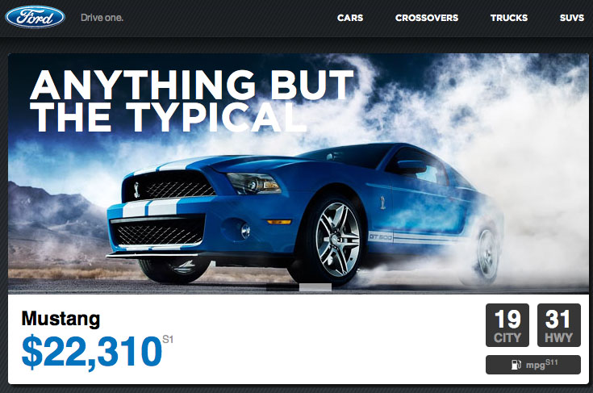
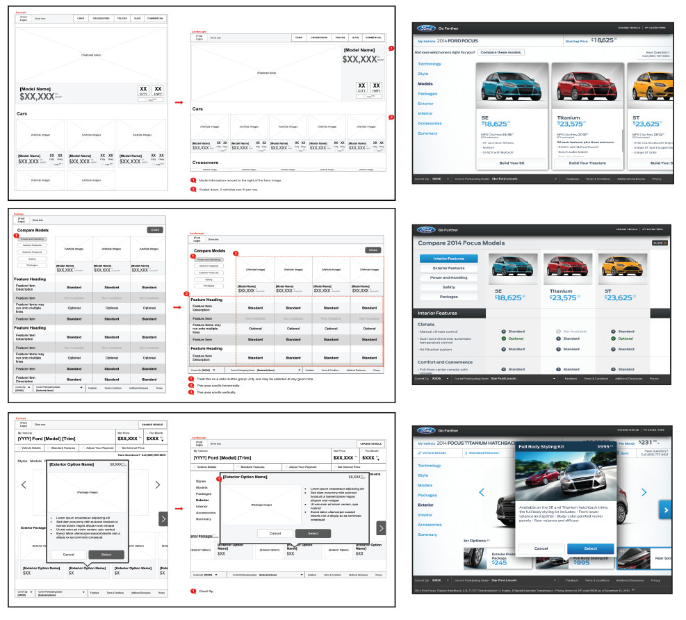
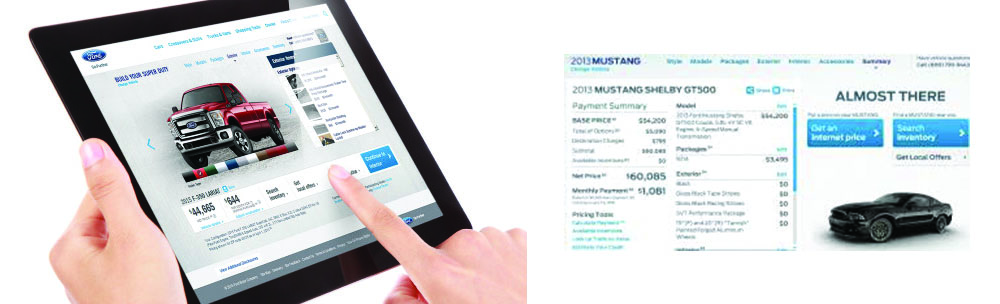

Ford Motor Company, like many global brands, was caught off-guard by the success of the iPad. Their sales tools, largely written in XHTML or Adobe Flash at the time, either performed poorly on touch-based devices or didn't work at all. As it became apparent that gestural platforms were too important a touchpoint to ignore, they sought a new solution.
I lead the multidisciplinary team of designers and architects from the front, contributing the design vision, interaction models, and team leadership to create Ford's first touch-centric customer experience.
Stakeholder interviews quickly revealed that Ford wanted more than to simply port the existing Build and Price tool from Flash to iPad. Ford wanted us to reinvent the Build and Price customer experience from the ground-up, not just from a technological perspective but from a customer experience perspective, too. The goal wasn't to adapt the the existing tool to today, the goal was to surpass it in every relevant metric.
The design so well-received that it lead to a revamped style guide for all their future sales tools, not only for touch devices but also on the web. Today, Ford's Build and Price product still uses the fundamental interaction models I designed eight years earlier.
"Jason is an incredible UXer. He has an extraordinary ability to make the most complex work simple and clear. He taught me new ways of thinking about my role and acted as a mentor, ensuring we remained on track."
Together, we can create applications that launch startups, platforms that power ecosystems, or experiences that transform enterprises. Let's make something amazing.